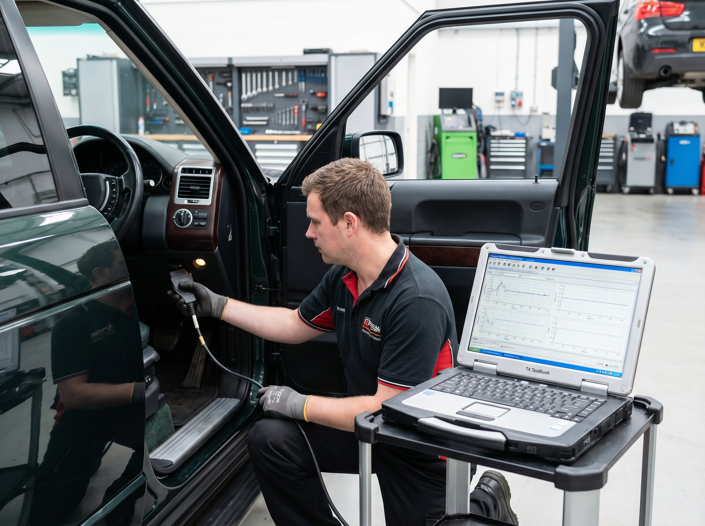
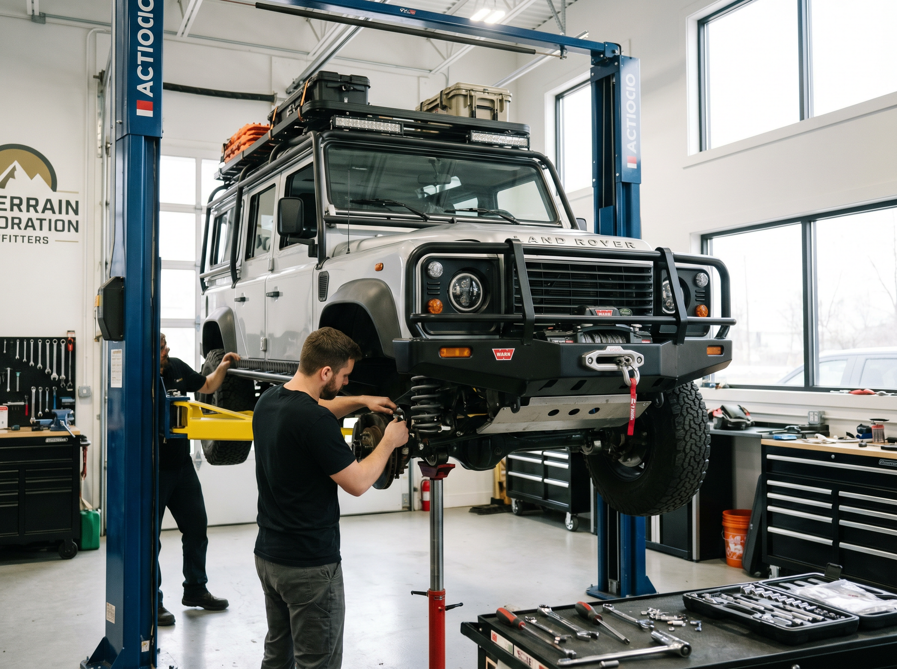
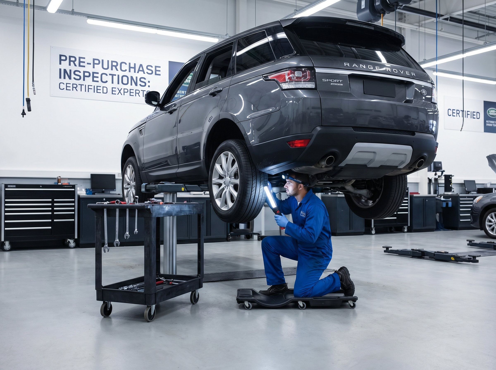

Our Expertise
Everything Your Land Rover Needs
PDX British has been servicing Land Rovers and Range Rovers since 1991. We use the factory T4 TestBook diagnostic system and have the experience to handle any job — from a simple oil change to a complete drivetrain rebuild.

Diagnostics
Factory T4 TestBook Diagnostics
We use the official Land Rover T4 TestBook diagnostic system — the same tool used by franchised Land Rover dealers. This gives us full access to all vehicle systems, fault codes, live data, and calibration functions that generic scan tools simply cannot reach.
- Full system fault code reading and clearing
- Live data monitoring across all modules
- EAS calibration and height sensor programming
- Transmission and transfer case adaptation
- Airbag and SRS system diagnostics

Suspension
EAS Air Suspension & Coil Conversions
Air suspension issues are one of the most common — and most misdiagnosed — problems on Range Rovers. We specialize in the full EAS system and offer coil spring conversions for owners who want a more reliable, lower-maintenance alternative.
- EAS compressor rebuilds and replacements
- Valve block service and replacement
- Air bag (bellow) replacement
- Height sensor calibration
- Coil spring conversion kits — all models

Off-Road & Expedition
Custom Off-Road Outfitting
Whether you're building a weekend trail rig or a full expedition vehicle, we have the experience and supplier relationships to outfit your Rover properly. We've built vehicles for Pacific Northwest trails, Moab, and international expeditions.
- Lift kits — 2" to 4" depending on model
- Custom steel and aluminum bumpers
- WARN and Smittybilt winch installation
- Roof racks, sliders, and skid plates
- Snorkels, diff locks, and recovery gear

Inspections
Pre-Purchase & For-Sale Inspections
Buying a used Land Rover or Range Rover without an independent inspection is a significant financial risk. Our pre-purchase inspection covers every system and gives you a clear, honest picture of what you're buying — before you commit.
- Full T4 diagnostic scan — all modules
- Undercarriage and frame inspection
- EAS and suspension condition assessment
- Engine and transmission health check
- Written report with repair cost estimates